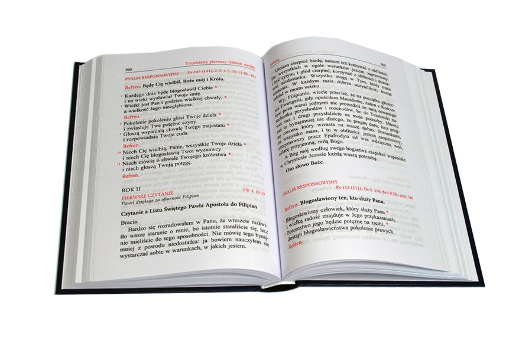

Posługa lektorska

Modlitwa lektora o łaskę wytrwania
Boże wszechmogący, który przyjąłeś mnie do służby lektora, błogosław mi, bym wyraźnie czytał słowa Pisma Świętego i według niego żył. Przez Chrystusa, Pana naszego. Amen. [1]
Modlitwa lektora (przed Mszą)
Przyjdź, Duchu Święty! Udziel mi łaski godnego głoszenia słowa Bożego, a wszystkim zgromadzonym na liturgii udziel daru przyjęcia tego słowa w swoim sercu. Naucz nas wiernie pełnić wolę Ojca niebieskiego. [2]
Modlitwa lektora (po Mszy)
Dzięki Ci, Duchu Święty, za powołanie mnie do głoszenia słowa Bożego w świętej liturgii Kościoła. Spraw, abym gorliwie wprowadzał słowo w czyn i był jego świadkiem wobec innych ludzi. [2]